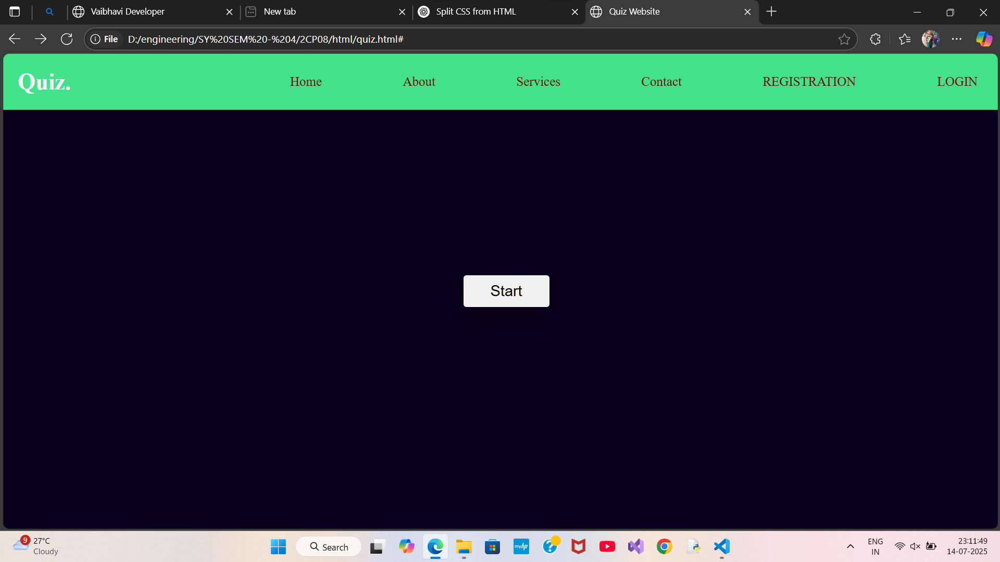
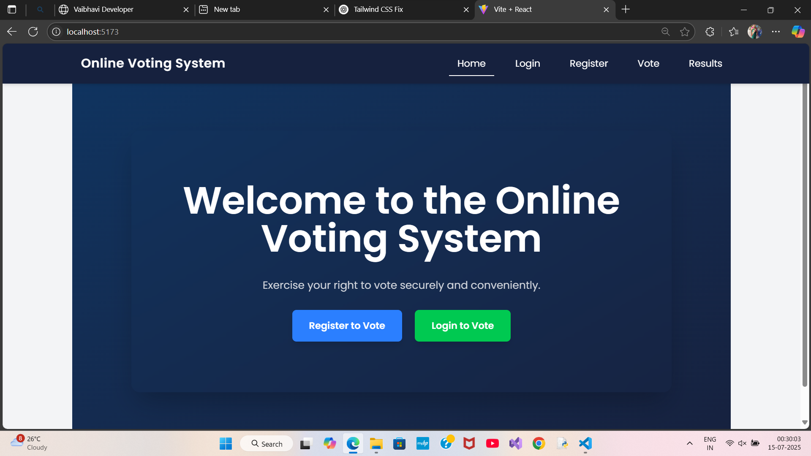
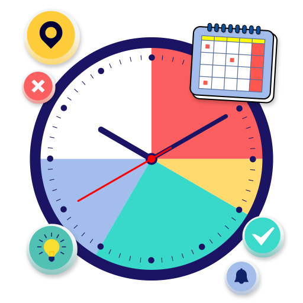

Hello, I'm Vaibhavi
Full Stack Developer
I am a passionate Full Stack Developer with Html, css, javascript, react js, node js, MongoDB web applications. With hands-on experience in modern web technologies, I aim to deliver innovative solutions that enhance user experience and drive growth.
Work Experience

HTML, CSS
July 2024 15 days Internship. I made one simple and basic Quiz website.
I used HTML, CSS, JavaScript.
Projects

